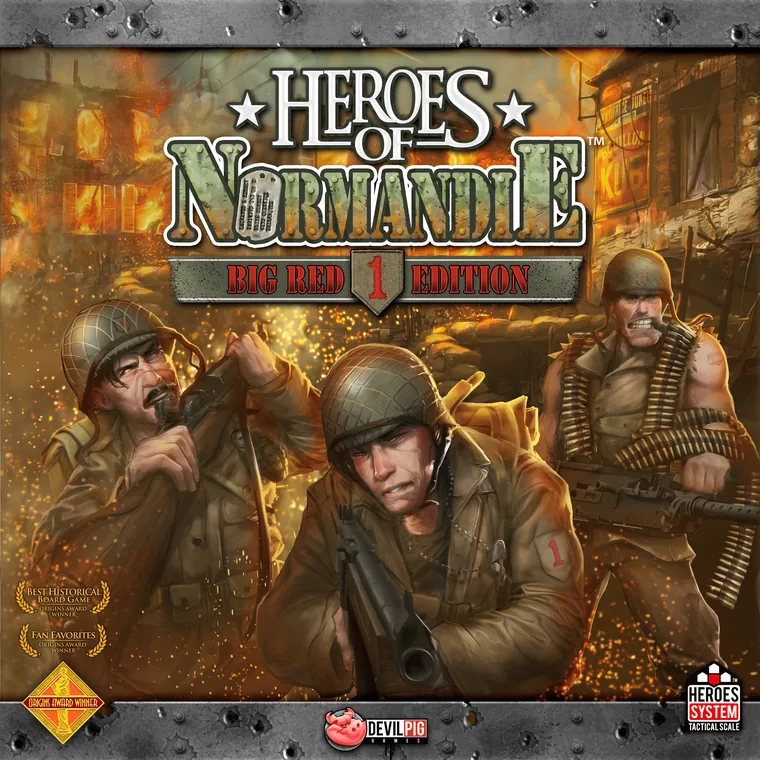

A community archive
Heroes of Normandie, in one place
Rules, scenarios, every unit, cards, maps and an army builder for the second edition (V2) boxes, and a catalogue of the first edition (V1). The publisher has closed, so this site keeps the material readable and searchable. It works on a phone at the table as well as on a desktop.
New here? Start with Big Red One, the core box. The battle packs below add to it.

Core boxMore boxes
Battle packs and War Stories add to Big Red One. Not everyone has the second edition, so the first edition is here too, with the V2 rules overriding the V1 rules. Each box has its own page.
Battle Pack #3, Windsor & Jupiter, is an expansion for Battle for Caen and is on that page.
Or go straight to
- Army builderBuild an army from the real tiles and options.
- Unit indexEvery tile, option and unit counter.
- RulesSearch the rulebooks, with pictures.
- ScenariosEvery scenario, with maps and armies.
- HeroesHero tiles and equipment cards.
- CardsThe Battle Event card decks.
- TokensMarkers and what they do.
- IconsThe icon glossary.
- MapsBoards, terrain and a map maker.
- HistoryThe real units, weapons and vehicles.
- ArchiveA catalogue of every product in the Heroes games, and what the site holds for it.
- GuidesBuying advice, strategy tips, and the first edition rules, scenarios and unit books.